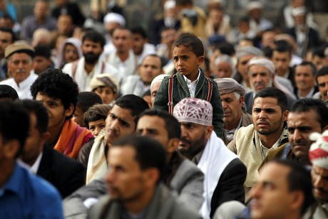
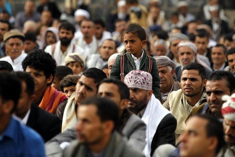
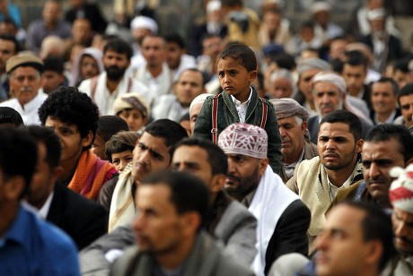

Yemen has a rich cultural heritage that spans thousands of years, the country’s history and identity. and practices that reflect the country’s history and identity.
Below, we explore some of the most notable aspects of Yemeni culture, from language and attire to food and social customs.
1. Traditional Clothing
Yemen’s traditional clothing is both practical and symbolic, reflecting its environment and social customs. Men typically wear a thobe or a long dress known as a “jambiya,” often accompanied by a dagger worn around the waist. Women wear colorful dresses with scarves or veils, with styles varying by region.
2. Language and Communication
Arabic is the official language in Yemen, with dialects that vary by region. Traditional languages such as Sabaean were spoken in ancient times, and these historical influences still appear in some dialects today. Verbal greetings are central to Yemeni hospitality, often accompanied by warm handshakes or gestures.
3. Cuisine and Culinary Traditions
Yemeni cuisine is known for its rich flavors and unique dishes, such as “saltah,” a stew topped with fenugreek, and “bint al-sahn,” a honey-covered bread dessert. Meals are often communal, served on a large platter to be shared with family or friends, emphasizing community and togetherness.
4. Social Customs and Gatherings
Hospitality is a core value in Yemen, with gatherings often centered around coffee or tea. It’s customary to offer guests coffee, tea, or even a meal as a gesture of warmth. Social gatherings often include the tradition of chewing "qat," a mild stimulant that has deep cultural roots in Yemen.
5. Arts and Handicrafts
Yemeni artisans are known for their intricate handicrafts, from silver jewelry and pottery to embroidered fabrics. Each region has its own distinct craft traditions, reflecting the diversity of Yemen’s culture. Music and dance also play an essential role, with unique styles like the “bara” dance performed at special occasions.
6. Festivals and Celebrations
Yemen celebrates Islamic festivals such as Eid al-Fitr and Eid al-Adha with traditional feasts and family gatherings. Weddings and other significant life events are marked by cultural ceremonies that vary by region, often including dance, music, and a strong sense of community.

Yemen is also known for its warm hospitality, with a rich tradition of welcoming guests and sharing meals, such as the famous Mandi and traditional bread.
The diverse landscapes, from the coastal plains to the mountainous regions, provide ample opportunities for adventure and exploration.


 
